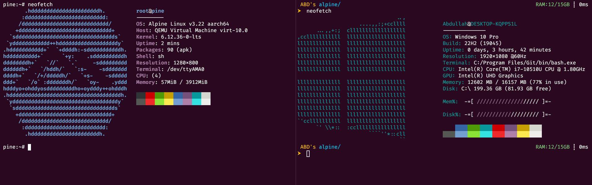
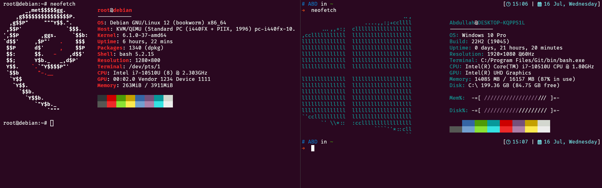

QEMU Essentials
QEMU Essentials: A Reference for System Emulation and Configuration#
QEMU is the Queen of all Emus
Introduction#
It is technically an emulation or virtualization software that can emulate machines across different architectures[1]. It offers arguably the best performance compared to other virtualization tools like VMware or VirtualBox. Personally, I’ve mostly used and preferred VMware to VirtualBox due to its smoother performance.
QEMU is unlike anything I’ve ever seen. To put it in perspective: QEMU, emulating Debian with a full XFCE desktop, used less memory than Microsoft Edge with just 20 tabs. What is wrong with modern browser applications being so insanely memory-hungry?!
I was first introduced to QEMU while exploring RISC-V[2], but I didn’t work with it seriously until watching Tsoding’s recreational programming sessions[3]. Later, at Accolade Electronics, I began working on Embedded Linux—this time diving deeper into QEMU, adding Buildroot and Yocto to my toolbelt as well.
I decided to write this blog (or more like a note to self) so I don’t waste time setting everything up again next time, and maybe help someone else in the same situation[4].
Options#
Here are some of the key QEMU command-line options I have used, along with quick reference. For the full detailed list checkout QEMU’s documentations[5]. Gentoo Linux also has a useful reference page for QEMU options[6].
-machine
To select the emulated machine
qemu-system-aarch64 -machine help will give the list of supported machines.
-cpu
The CPU to emulate. -cpu help to see all options.
-accel
For acceleration backend which can improve QEMU performance
options:
-accel tcg
Use Tiny Code Generator, QEMU’s default software emulation (slower, but works everywhere).-accel kvm
Use KVM (Kernel-based Virtual Machine) on Linux → hardware-accelerated (fast, needs host CPU + privileges).-accel hvf
Use HVF on macOS (Apple’s Hypervisor.framework).-accel whpx
Use WHPX (Windows Hypervisor Platform) on Windows with AMD/Intel CPUs.
If you are on Windows, you will need to use either tcg or whpx.
WHPX Setting
Enable
Windows Hypervisor Platform (WHPX)orHyper-V Platformfrom windows features. [7]Run QEMU with:
$ qemu-system-aarch64 -accel whpx
If you encounter this error:
WHPX: setting APIC emulation mode in the hypervisor Windows Hypervisor Platform accelerator is operational whpx: injection failed, MSI (0, 0) delivery: 0, dest_mode: 0, trigger mode: 0, vector: 0, lost (c0350005)
Try[8]:
$ qemu-system-aarch64 -accel whpx,kernel-irqchip=off
-smp
To configure number of virtual cpus (vCPUs) for virtual machine.
I would suggest going through QEMU docs on -smp[9] before using this option.
Term |
Meaning |
|---|---|
Socket |
A physical CPU package (e.g., a chip on motherboard). |
Core |
An independent processing unit inside a socket. |
Thread |
A virtual execution unit inside a core (e.g., via Hyper-Threading). |
CPU |
In QEMU/KVM, a vCPU = 1 thread (what the guest sees as a processor). |
-m
Sets the guest memory size. Example:
-m 2048 # 2 GB RAM
-bios
QEMU uses QEMU_EFI.fd to boot UEFI-based guest OSes—especially for AArch64 (ARM 64-bit).
Download from Linaro Releases
Bios files may also present in
"$QEMU_PATH/share/firmware/"
UEFI (Unified Extensible Firmware Interface) is the modern replacement for legacy BIOS.
 Image Reference[10]
Image Reference[10]
*.fd = UEFI Firmware Image
Simulates real UEFI firmware (which lives in flash ROM on real hardware)
Loads before the OS kernel
It runs before Linux, initializes hardware, and boots the kernel via bootloaders or direct EFI stubs.
-drive
For virtual disk and how QEMU should treat it
-drive file=alpine.qcow2,format=qcow2,if=virtio
Defines a virtual storage device
Booting a pre-installed system
file=alpine.qcow2→ your root filesystemformat=qcow2→ tells QEMU how to interpret the image formatif=virtio→ attaches the disk using fastvirtiointerface (used by modern OSes) Equivalent to-drive file=alpine.qcow2,if=none,format=qcow2,id=hd0 \ -device virtio-blk-device,drive=hd0
This shows up in the guest as /dev/vda (virtio disk A). The kernel mounts it as root (/).
-hda
Legacy shortcut for -drive
Instead of -hda, -hdb, -hdc, -hdd, you can use[5]:
qemu-system-x86_64 -drive file=file,index=0,media=disk
qemu-system-x86_64 -drive file=file,index=1,media=disk
qemu-system-x86_64 -drive file=file,index=2,media=disk
qemu-system-x86_64 -drive file=file,index=3,media=disk
-kernel
Specifies the Linux kernel binary to boot
-initrd
Provides an optional initramfs (compressed root filesystem in memory). Can be skipped if booting directly from disk.
console=ttyAMA0
Required for serial output when using the virt machine on AArch64.
-device
Used for adding virtual hardware
-deviceexplicitly tells QEMU what virtual hardware to plug in.need
-deviceto actually connect the drive from-driveto the virtual hardware.
-cdrom
Used to mount ISO file as virtual CD-ROM
Used when you want to boot live OS or installer (e.g.
alpine.iso,ubuntu.iso).Must pair with
-boot dif you want to boot from it.
not needed when booting kernel directly via
-kernel,initrdRemove
-cdromlater to boot installed systemEquivalent to
-drive file="$ISO_PATH",media=cdrom
-boot
Specifies the boot order for drives
like setting priority
Option |
Use Case |
File Type |
Bootable? |
Example |
|---|---|---|---|---|
|
Boot an ISO image (Live CD, installer) |
|
Yes |
|
|
Use any disk image (e.g. HDD/SSD) |
|
Yes |
|
Method |
Use Case |
Bootloader Required |
Root FS Required |
|---|---|---|---|
|
Boot pre-installed OS (e.g., Alpine in |
Yes ( |
Yes |
|
Boot directly from Linux kernel + initramfs |
No |
Optional (initrd can be self-contained) |
-nic
sets up networking for QEMU
-nic user gives the guest internet access via NAT
when you use -nic, you should not use -device virtio-net-device separately (to avoid duplicate NICs).
-netdev
low lever network backend configuration
-netdev user,id=net0,hostfwd=tcp::2222-:22
user mode networking
id=net0: ID reference to this backend
hostfwd: port forwarding (host:2222->guest:22)
-device virtio-net-device,netdev=net0to connect frontend So-netdev= backend, and-device= frontend (NIC).
-nic is shortcut for simple setups. Combines -netdev + -device in one line.
-nic user,model=virtio is equivalent to
-netdev user,id=n0
-device virtio-net,netdev=n0
-rtc
For real time clock inside the guest VM.
base=utc: Specify base as utc or localtime to let the RTC start at the current UTC or local time, respectively
clock=host: sync the guest’s RTC from the host system’s clock. By default, the RTC is driven by the host system time.
Image Setup#
Creating Disk Image#
QEMU supports many disk image formats, including growable disk images[11]. It supports different formats such as raw (.img), QEMU Copy-On-Write (.qcow2), Microsoft Virtual Hard Disk (.vhdx), etc.
$ qemu-img create -f <format> <image_name> <size>
Example:
$ qemu-img create -f qcow2 alpine.qcow2 16G
Resizing Disk Image#
You can also resize the disk
$ qemu-img resize -f raw debian.img +32G
Snapshots#
$ qemu-img snapshot [ -l | -a snapshot | -c snapshot | -d snapshot ] filename
The accepted arguments are as follows:
-llists all snapshots associated with the specified disk image.The apply option,
-a, reverts the disk image (filename) to the state of a previously saved snapshot.-ccreates a snapshot (snapshot) of an image (filename).-ddeletes the specified snapshot.
Example:
$ qemu-img.exe snapshot -c debian-freshinstall debian.qcow2
$ qemu-img.exe snapshot -l debian.qcow2
Snapshot list:
ID TAG VM_SIZE DATE VM_CLOCK ICOUNT
1 debian-freshinstall 0 B 2025-07-16 14:35:52 0000:00:00.000 0
You can also create an overlay snapshot image from base image[12].
Create a base image:
$ qemu-img create -f qcow2 base.qcow2 10G
Create a snapshot image (overlay):
$ qemu-img create -f qcow2 -b base.qcow2 overlay.qcow2
Boot from snapshot:
$ qemu-system-x86_64 -drive file=overlay.qcow2,format=qcow2
Changes go to overlay.qcow2, base stays clean. Making any changes to its backing file (base.qcow2) will corrupt this snapshot image.
Installing OS into Disk Image#
$ qemu-system-aarch64 \
-bios QEMU_EFI.fd \
-drive if=virtio,file=alpine.qcow2,format=qcow2 \
-cdrom alpine.iso \
-boot d
Or
$ qemu-system-x86_64 \
-hda debian.qcow2 \
-cdrom debian.iso \
-boot d
See option -cdrom.
This boots from the provided ISO and installs OS to disk_image.qcow2.
After installation
$ qemu-system-x86_64 \
-drive file=mydisk.qcow2,format=qcow2 \
-boot c \
-m 2G
this boots from the image like a virtual HDD. You’ll require -bios options for AArch64 emulation.
Emulating AArch64 (Alpine) on QEMU#

Installing Alpine on QEMU#
get the alpine ISO from downloads | Alpine Linux
Setup virtual machine type, bios, drive to boot from and for filesystem, etc. [3][13]
ISO_PATH="alpine-standard-3.22.0-aarch64.iso"
QCOW2_IMAGE="alpine.qcow2"
qemu-img create -f qcow2 "$QCOW2_IMAGE" 16G
qemu-system-aarch64 \
-M virt -cpu cortex-a53 -m 1G \
-bios "$QEMU_PATH/share/edk2-aarch64-code.fd" \
-drive if=virtio,file="$QCOW2_IMAGE",format=qcow2 \
-device virtio-gpu \
-cdrom "$ISO_PATH" \
-boot d \
-nographic \
-nic user,model=virtio \
-rtc base=utc,clock=host
Now, setup alpine:[14]
$ setup-alpine
Hostname: pine
Interface: eth0
manual network configuration (y/n): n
Proxy: none
Network Time Protocol: busybox
APK Mirror: dl-cdn.alpinelinux.org
ssh server: openssh
Allow root ssh login? ('?' for help) [prohibit-password]: yes
Available disks are:
vda (17.2 GB 0x1af4 )
Which disk(s) would you like to use? (or '?' for help or 'none') [none] vda
The following disk is selected:
vda (17.2 GB 0x1af4 )
How would you like to use it? ('sys', 'data', 'crypt', 'lvm' or '?' for help) [?] sys
WARNING: The following disk(s) will be erased:
vda (17.2 GB 0x1af4 )
WARNING: Erase the above disk(s) and continue? (y/n) [n] y
Running Alpine (Headless)#
$ qemu-system-aarch64 \
-M virt -cpu cortex-a53 -smp 4 -m 4G \
-bios "$QEMU_PATH/share/edk2-aarch64-code.fd" \
-drive if=virtio,file="$QCOW2_IMAGE",format=qcow2 \
-nographic \
-device virtio-gpu \
-netdev user,id=mynet0,hostfwd=tcp::2222-:2222,hostfwd=tcp::6969-:22 \
-device virtio-net-device,netdev=mynet0 \
-rtc base=utc,clock=host
Running Alpine (GUI/Desktop)#
$ qemu-system-aarch64 \
-M virt -cpu cortex-a53 -smp 4 -m 4G \
-bios "$QEMU_PATH/share/edk2-aarch64-code.fd" \
-drive if=virtio,file="$QCOW2_IMAGE",format=qcow2 \
-display sdl,gl=on \
-device virtio-gpu \
-device virtio-keyboard-pci \
-device qemu-xhci \
-device usb-tablet \
-netdev user,id=mynet0,hostfwd=tcp::2222-:2222,hostfwd=tcp::6969-:22 \
-device virtio-net-device,netdev=mynet0 \
-nic user,model=virtio \
-rtc base=utc,clock=host
Emulating x86_64 (Debian) on QEMU#

Installing Debian on QEMU#
get the debian ISO from Downloading Debian USB/CD/DVD images via HTTP/FTP
ISO_PATH="debian-12.11.0-amd64-netinst.iso"
QCOW2_IMAGE="debian.qcow2"
qemu-img create -f qcow2 "$QCOW2_IMAGE" 40G
qemu-system-x86_64 \
-smp 8,cores=4,maxcpus=16 \
-m 4G \
-vga virtio \
-display sdl,gl=on \
-accel whpx,kernel-irqchip=off \
-hda "$QCOW2_IMAGE" \
-cdrom "$ISO_PATH" \
-boot menu=on \
-device qemu-xhci \
-device usb-mouse \
-device usb-kbd
cpus = sockets × cores × threads
that means I have
8 = 2 sockets x 4 cores x 1 threads
threads = 1
sockets = 2
cores = 4
Running Debian (GUI/Desktop)#
$ qemu-system-x86_64 \
-smp 8,cores=4,maxcpus=16 \
-accel whpx,kernel-irqchip=off \
-m 4G \
-vga virtio \
-display sdl,gl=on \
-drive file=debian.qcow2,format=qcow2,media=disk \
-netdev user,id=mynet0,hostfwd=tcp::2223-:2223,hostfwd=tcp::6696-:22 \
-device e1000,netdev=mynet0 \
-rtc base=utc,clock=host \
-device intel-hda \
-device hda-duplex \
-device qemu-xhci -device usb-mouse -device usb-kbd
For Audio: -device intel-hda -device hda-duplex
Running Debian (Headless)#
Using -nographic will work most of the time.
However, if you face errors such as being stuck in GRUB, it is likely due to GRUB expecting a graphical terminal.
SeaBIOS (version rel-1.16.3-0-ga6ed6b701f0a-prebuilt.qemu.org)
iPXE (http://ipxe.org) 00:03.0 CA00 PCI2.10 PnP PMM+BEFD0FF0+BEF30FF0 CA00
iPXE (http://ipxe.org) 00:04.0 CB00 PCI2.10 PnP PMM+BEF1FFF0 BEF30FF0 CB00
Booting from Hard Disk...
GRUB loading.
Welcome to GRUB!
To fix this, update GRUB settings to use serial terminal[15].
Edit /etc/default/grub file, and make sure the following lines are present or uncommented.
GRUB_CMDLINE_LINUX="console=tty0 console=ttyS0,115200n8"
GRUB_TERMINAL=serial
GRUB_SERIAL_COMMAND="serial --speed=115200 --unit=0 --word=8 --parity=no --stop=1"
And update the grub.
root@debian:~$ sudo update-grub
Common Configurations#
Input Devices#
Keyboard:
-device virtio-keyboard-pciIf that doesn’t work with acceleration enabled, try:
-device qemu-xhci # USB3.0 emulation -device usb-kbd
Mouse:
virtio-mouse
-device virtio-mouse-pcior-device virtio-mouseBut caused Mouse cursor to jitter all over the screen. tried the following[16] setting, but it didn’t work in my setup.$ export SDL_VIDEO_X11_DGAMOUSE=0
USB Mouse
-device usb-mouseor-device usb-tablet,to solve:
No 'usb-bus' bus found for device 'usb-tablet'add xhci flag.-device qemu-xhci # USB3.0 emulation -device usb-mouse
virtio-tablet
Used paravirtualized tablet-like pointing device. Gave smooth mouse movement
-device virtio-tablet-pci
USB Tablet
Best performance
-device qemu-xhci -device usb-tablet
Display#
-display helpGives a list of supported displaysnone gtk sdl egl-headless curses spice-app dbus
Default is
-display gtkSegfaults when used
-display gtk,gl=on, suggesting it is not supported by the hostSmoother performance with
-display sdl,gl=on(possibly because of Windows HOST or maybe not)
Virtual GPUs#
Device |
Type |
Purpose |
|---|---|---|
|
Paravirtualized |
Fast GUI with acceleration |
|
Simple framebuffer |
Basic display (UEFI, boot screens) |
|
Emulated legacy GPUs |
Older OS support |
|
Para GPU (SPICE) |
For SPICE-based setups |
Networking & SSH#
Port Forwarding#
hostfwd=tcp::8080-:80 # Forward HTTP
hostfwd=udp::1234-:1234 # Forward UDP
Works only with -netdev user (user-mode networking).
Example:
$ qemu-system-x86_64 \
-m 1024 \
-hda disk.img \
-netdev user,id=net0,hostfwd=tcp::2222-:22 \
-device e1000,netdev=net0
You can also forward multiple ports
Troubleshooting#
Inside the Guest check for ip using ip a, you should see an interface like eth0 or ens3 or enp0s2 with IP 10.0.2.x
$ ip a
2: enp0s2: <BROADCAST,MULTICAST,UP,LOWER_UP> mtu 1500 qdisc fq_codel state UP group default qlen 1000
link/ether 52:54:00:12:34:56 brd ff:ff:ff:ff:ff:ff
inet 10.0.2.15/24 brd 10.0.2.255 scope global dynamic enp0s2
valid_lft 86294sec preferred_lft 86294sec
inet6 fec0::5054:ff:fe12:3456/64 scope site dynamic mngtmpaddr
valid_lft 86295sec preferred_lft 14295sec
inet6 fe80::5054:ff:fe12:3456/64 scope link
valid_lft forever preferred_lft forever
If not you can try running DHCP manually
$ sudo dhclient
SSH Setup#
To check if ssh is working[17]
root@debian:~$ sudo systemctl status sshd
root@debian:~$ sudo systemctl restart sshd
Or
root@pine:~$ rc status
root@pine:~$ rc-service sshd start
Or
root@pine:~$ ps aux | grep sshd
Or just do ssh localhost
The Guest machine is running ssh server which is listening on port 22 by default. This must be forwarded to one of the Host (Windows)’s port. To forward multiple ports:[18][19]
$ qemu-system-aarch64 \
... \
-netdev user,id=mynet0,hostfwd=tcp::2222-:2222,hostfwd=tcp::6969-:22 \
-device virtio-net-device,netdev=mynet0 \
...
Also see unix - How do I set up SSH so I don’t have to type my password?[20], to avoid having to type password each time.
To use vim to edit over ssh
vim scp://root@localhost:6969//root/hello/hello.S
Troubleshooting#
If you get permission denied even after having correct credentials you can check is the file /etc/ssh/sshd_config have the following lines.
PermitRootLogin yes
PasswordAuthentication yes
And restart the ssh service.
X11 Forwarding#
VcXsrv#
Run VcXsrv with “Disable access control” option
or from command line
$ vcxsrv.exe :0 -ac -multiwindow -clipboard -wgl -listen tcp
root@pine:~$ xeyes
connect localhost port 6010: Connection refused
Error: Can't open display: localhost:10.0
By default, VcXsrv listens on 6000 + display-number port
Why 6010 port?#
X11 forwarding over SSH maps DISPLAY=localhost:10.0 → TCP port 6010
if display is set to localhost:10.0 try setting it to localhost:0.0
Install x11-apps#
root@debian:~$ sudo apt install x11-apps
Install xeyes and xauth
Alpine Troubleshooting#
root@pine:~$ apk add xeyes
ERROR: unable to select packages:
xeyes (no such package):
required by: world[xeyes]
Alpine’s default installation is very minimal, and you might be missing the “community” repository, which contains desktop environment packages.
edit /etc/apk/repositories to add http://dl-cdn.alpinelinux.org/alpine/v3.22/community
root@pine:~$ cat /etc/apk/repositories
#/media/vdb/apks
http://dl-cdn.alpinelinux.org/alpine/v3.22/main
http://dl-cdn.alpinelinux.org/alpine/v3.22/community
root@pine:~$ apk update
xauth#
/usr/bin/xauth: file /root/.Xauthority does not exist
Generate .Xauthority:
Run this in the guest (Alpine):
root@pine:~$ xauth generate :0 . trusted
Or if you want to match SSH forwarding display:
root@pine:~$ xauth generate localhost:10 . $(mcookie)
Verify with:
root@pine:~$ xauth list
/unix:10 MIT-MAGIC-COOKIE-1 8b6797669a84fde1f6af7172589bcc6c
Complete Steps for X11 Forwarding#
(Host) Start VcXsrv with display no
10instead of-1(Host) set display in environment
export DISPLAY=localhost:10.0(Guest) Edit
/etc/ssh/sshd_configand add this line, if not presentX11Forwarding yes
and restart ssh service
root@pine:~$ /etc/init.d/sshd restart or root@pine:~$ rc-service sshd restart
(Guest) Setup xauth configuration.
(Host) connect with ssh[18]
$ ssh root@localhost -p 6969 -XY # -Y (trusted) -X (untrusted)
Desktop Environment#
In Linux, the desktop environment encompasses everything you interact with during your desktop session: the graphical user interface (GUI), the file manager, and utilities that manage network connections, display settings, and more. It differs from the operating system core, which is the kernel and basic system utilities.
Some of the known lightweight DEs are;
XFCE
LXDE
MATE
LXQt
Enlightenment
root@debian:~$ sudo apt install -y xfce4
root@debian:~$ sudo systemctl set-default graphical.target
The Alpine Linux offers a script for quickly setting up a desktop[21].
root@pine:~$ setup-desktop
Setup a user? (enter a lower-case loginname, or 'no') [no]
Which desktop environment? ('gnome', 'xfce', 'mate', 'sway', 'lxqt' or 'none') [none] xfce
Updating repository indexes...
Others#
Debugging in QEMU#
We can start QEMU in debug mode using the -s flag which opens a GDB server on TCP at port 1234
The -S is to prevent the CPU from starting immediately, so firmware/kernel is loaded but execution is halted at the reset vector.
$ qemu-system-arm -machine stm32vldiscovery -nographic -kernel kernel.elf -s -S
and then start GDB instance to connect to QEMU
$ gdb-multiarch kernel.elf -ex 'target remote localhost:1234'
For a different port use -gdb tcp::5555 instead of -s.
Kill QEMU#
Incase of unresponsive behaviour use:
$ ps | grep qemu | grep -v grep | awk '{print $1}' | xargs kill -9ps
Comments